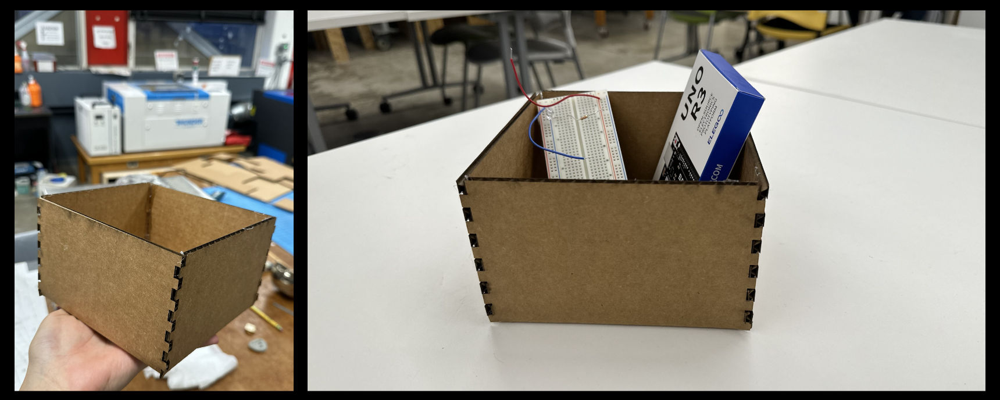
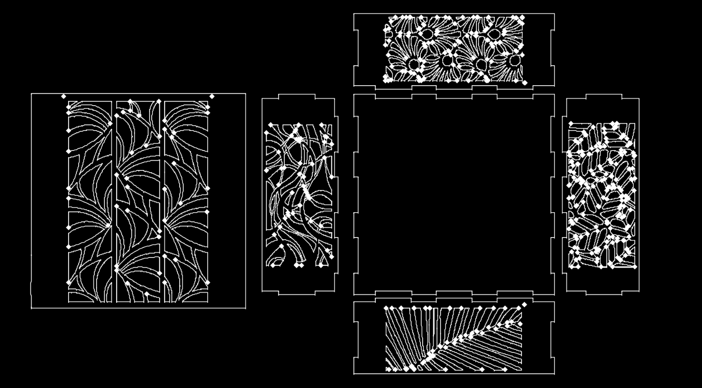
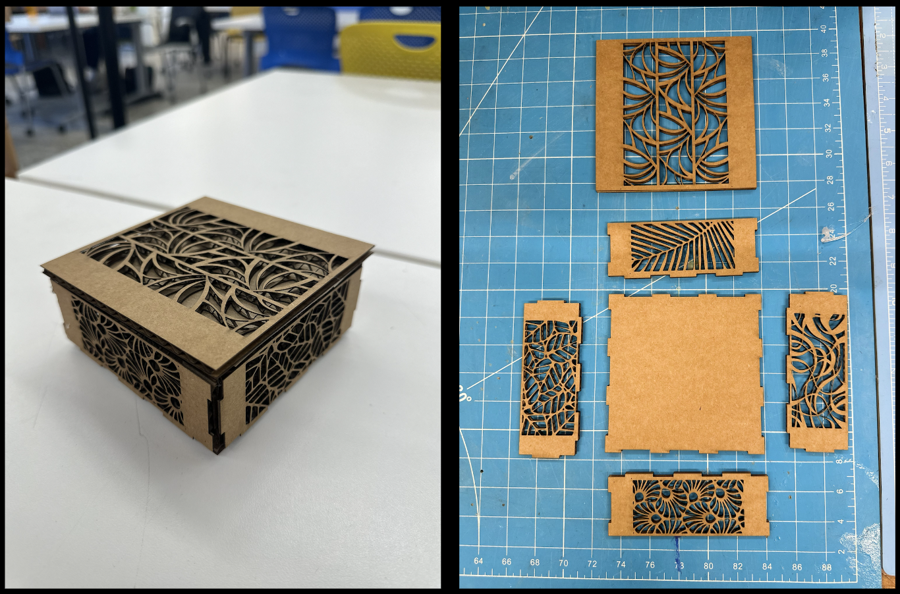

# box construction
# ---------------------------------
To kick off my Fusion 360 journey, I began with Nathan’s finger joint box tutorial, to design the following V1 box:

Since the bottom of the box had to be folded up because the component was only half-cut, I decided in my final iteration to fully cut out each side of the box and add joints to each edge.
For my final iteration, I also added some personal flair by downloading an open-sourced geometric floral pattern design on Shutterstock, converting the PNG file to SVG, and the importing the design into Fusion 360.

Thanks to Bobby's help, I resized the file and fired up the laser cutter:

In order for the top of the box to fully open and close, I added a smaller off-set square. Here is my final product:
